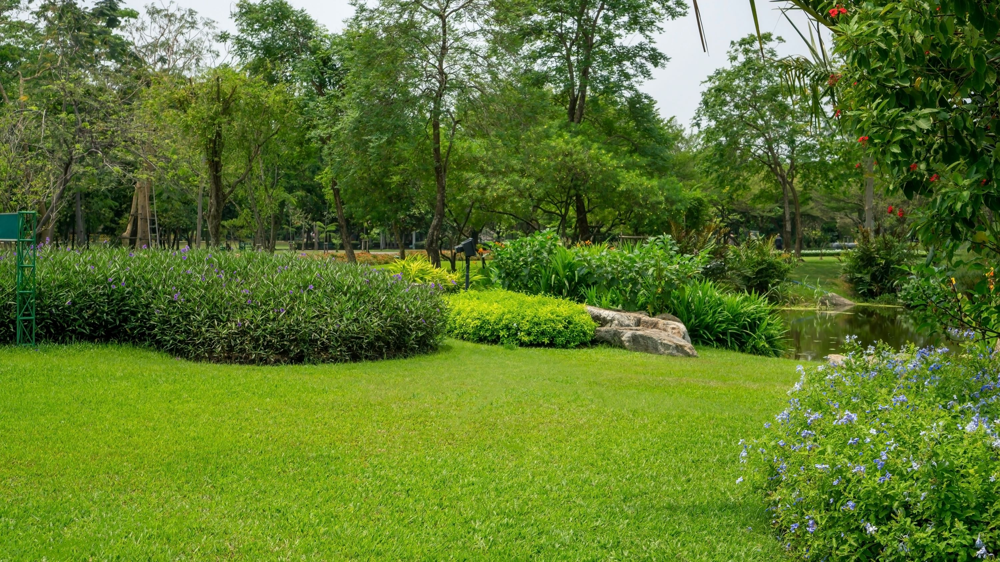
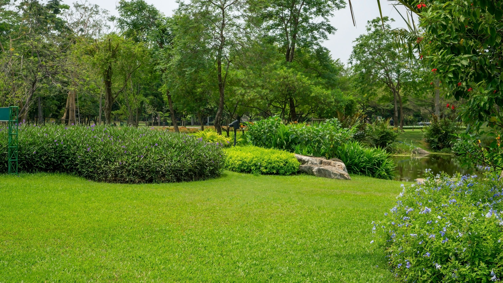
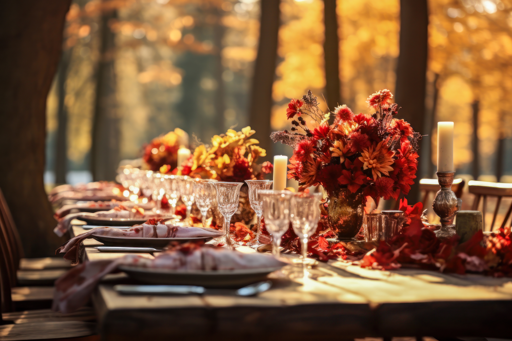

About Lilac Valley
Lilac Valley Farm Stay is a simple, rustic farm stay accommodation in the hills of the Blue Mountains. The property is owned by Marina Ye, a local interior designer who purchased the old rundown barn three years ago with a plan to renovate. After years of hard work, the property now features a beautifully restored, open plan, luxury barn house, on four acres of land home to sheep, chickens, ducks and one very friendly goat named Rosie. There is an outdoor plunge pool just off the back verandah, and a stunning cottage garden.

Our Farm Gallery
Luxurious pet-friendly retreat offering accommodation for couples, friends and families.
Take a break from your everyday routine and recharge with an authentic farmstay experience.
The whole property accommodates up to 6 adults and 4 children, across 3 dwellings sharing 15-acres of lush countryside.
Choose from 'The Apartment' famed for its sunsets, 'The Cottage' loved for its wood burner or 'The Tiny House', adored for its tiny everything..


 



Our Animals
Luxurious pet-friendly retreat offering accommodation for couples, friends and families.
Take a break from your everyday routine and recharge with an authentic farmstay experience.
The whole property accommodates up to 6 adults and 4 children, across 3 dwellings sharing 15-acres of lush countryside.
Choose from 'The Apartment' famed for its sunsets, 'The Cottage' loved for its wood burner or 'The Tiny House',
adored for its tiny everything..
Celebrate with Us
There have been many beautiful weddings held at Lilac Valley Farm Stay.
A unique feature of Lilac Valley Farm is that the venue is the perfect setting for a private, country wedding in the hinterlands of the scenic Blue Mountains.
The house provides accommodation and facilities for the wedding party both before and after the wedding and reception.
We have a Beautiful Rustic Barn for receptions and lovely ceremony spots, with lots of great photo opportunities on the property.
Nullam urna turpis, sodales viverra consectetur quis, posuere ut lorem. Sed cursus ipsum vel quam iaculis, sed sagittis nisi vehicula. Nunc fermentum venenatis risus, eget blandit ex semper in.
Nullam urna turpis, sodales viverra consectetur quis, posuere ut lorem. Sed cursus ipsum vel quam iaculis, sed sagittis nisi vehicula. Nunc fermentum venenatis risus, eget blandit ex semper in.
Nullam urna turpis, sodales viverra consectetur quis, posuere ut lorem. Sed cursus ipsum vel quam iaculis, sed sagittis nisi vehicula. Nunc fermentum venenatis risus, eget blandit ex semper in.
